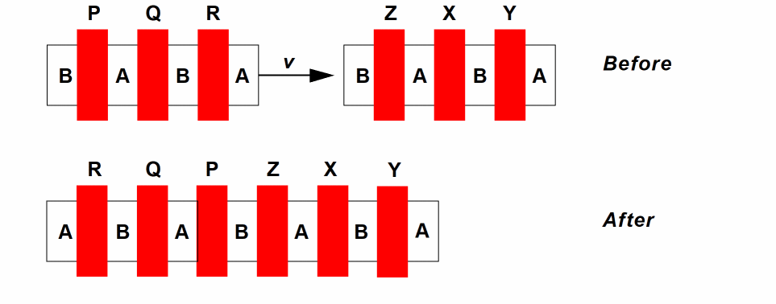
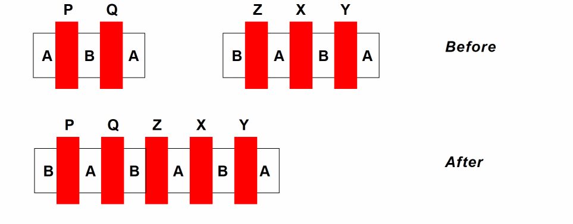
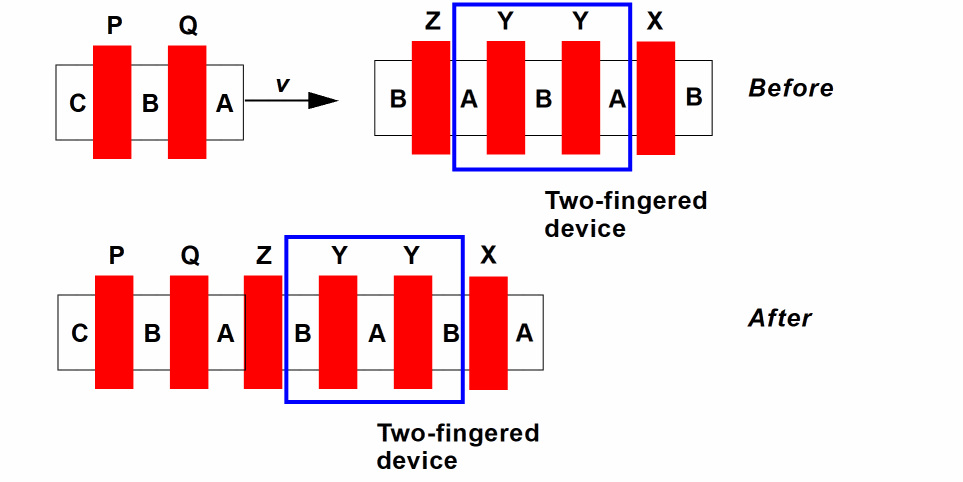

autoMirrorChains
layoutXL autoMirrorChains boolean { t | nil }
Description
Specifies that if a short violation is created during abutment of a chain of devices, then Layout XL first mirrors the chain in question in order to resolve the short. Only if this is unsuccessful does Layout XL attempts to resolve the short by permuting the pins.
GUI Equivalent
Examples
envGetVal("layoutXL" "autoMirrorChains")
envSetVal("layoutXL" "autoMirrorChains" 'boolean nil)
Additional Information
Chains can be mirrored only if
-
The
autoMirrorenvironment variable is set tot - They have no physical connectivity or routing defined
- The cells in the chain all belong to the same group (including synchronous clones) or no group
- The chain contains no multiply-abutted cells
- Any end-pin violations are valid left/right or top/bottom pairs
The following transformations are possible. Which of the three is employed is controlled internally by the abutment code. You are not required to choose a particular transformation. No transformation is performed which would break the chain.
-
Chain Mirror
Mirrors the complete moving chain about its central Y axis to allow abutment.
 -
Cascade Mirror
Mirrors each individual device in the chain to allow abutment.
 -
Cascade Mirror Permute (2 nets)
Neither Chain Mirror nor Cascade Mirror alone can deliver a transformation that allows abutment. Instead, a mixture of Cascade Mirror and Permute is employed in order to achieve the desired result.

Related Topics
List of Layout XL Environment Variables
Return to top